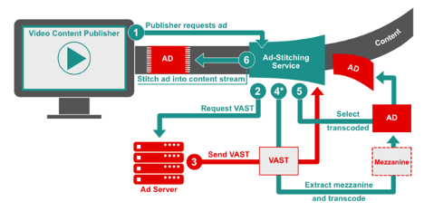

Programmatic Guide
Connected TV with Highlights for SSAI
Introduction
In recent years Digital Video has matured as a medium for advertising. Meanwhile an adolescent CTV market has begun to blossom, leading to new opportunities for expanding reach into homes across screens and devices. Traditionally these environments have been limited when it comes to providing a level of functionality and insight that have been the norm across web browsers and mobile apps. With advances in technology and improvements to standards, the industry has seen increasing parity in capabilities across environments, though not without some challenges in maintaining consistency when it comes to delivery, addressability, measurement, and fraud.
The goal of this document is to provide a comprehensive guide in achieving the optimal implementation of digital video technical standards in CTV environments for the following channels:
- Publisher / Player
- Ad Server
- Adtech Vendors- DSP / SSP/ Exchanges
- Measurement Verification Providers
Technical components are broken down into use cases (including a spotlight on Server Side Ad Stitching (SSAI) implementations) with a focus on the following six functional areas:
- Delivery
- Targeting
- Measurement & Verification
- Interactivity
- Ad Fraud
- Brand Safety
Audience
This guide is intended for individuals that work in the buying and development of video and CTV ad technology for publisher players, ad servers, ad creative developers, measurement & verification providers, as well as demand side platforms & exchanges, media buyers, ad trafficking and operations, partner integration/onboarding engineers and Product Development. The content is somewhat technical as it references different specifications and guidance documentation, but anyone who works with systems that handle video ad transactions should find the details useful.
Background
Initially launched in 2008, VAST has since played an important role in the growth of the digital video marketplace. The early days of video consisted mostly of shared videos and other user-generated content. Success in monetizing this content with ads has produced the resources to improve the digital video marketplace. However, digital video has met a number of challenges along the way. With the introduction of VAST 4.1 in 2018, new features were included to address some of these challenges, such as compatibility and latency issues that cause poor quality user experiences or difficulties in tracking creatives that are used across multiple platforms. As players begin to adopt the updates in subsequent VAST 4.x versions, digital video advertising can expect smoother operation and continued growth. If VAST 4.x is the heart of delivering a high-calibre digital video ad campaign, then Tech Lab’s portfolio of additional standards are the supporting vital organs necessary in providing privacy-centric addressability, anti-fraud transparency, measurement accuracy and rich interactive experiences.
Preface on SSAI
With SSAI, a client media player on the user device (client) no longer has to make ad server calls to deliver an ad. This is ideal for midroll, live streaming, and broadcast scenarios such as a news or sporting event where the latency of loading and unloading a player/ad on the client can cause errors and result in a poor user experience. Instead, an SSAI provider makes the ad requests on the client’s behalf, which has passed along details about the viewing session such as location, device type, and other data that can be useful in selecting the most relevant ads. After an ad has been selected, the SSAI provider matches the ad quality to that of the content and stitches the ad into the content stream, which is seamlessly delivered to the client player in a single stream. VAST 4 supports the increasingly common “ad-stitching” method for stitching linear ads into a video or audio content stream and sending it to players on client devices. While VAST 4 has specific items for SSAI, some developers still use VAST 3 to execute. For version-specific ads from advertisers, VAST 2, 3 or 4 all work today.
- Message Sent to Stitching Service: The publisher sends a message for VOD or stream start signal for live stream, to the ad-stitching service.
- Request Ads via Ad Call: The ad-stitching service makes a request to the ad server. For VOD, this is typically VMAP or In-line VMAP with VAST to the main ad decision software. For live stream this is a formatted ADS ad call for the single break.
- Send VAST: The ad server responds with a VAST tag with a mezzanine file, and ready-to-serve files. SSAI vendors download the highest bitrate available and get it ready. If the ad stitching service has already received the creative for a previous request and has transcoded the mezzanine file, it moves on to step 5. If the VAST tag response is a Wrapper tag then the ad-stitching service should extract the inner InLine response using the same precedence logic as a client-side media player.
- *Extract Mezzanine and Transcode: The ad-stitching service pulls the unique creative identifier from the VAST tag. If the creative has never been used in the system, the mezzanine file is extracted and transcoded. In this scenario, the ad is skipped and the next available ad is played instead. VAST error code 407 is sent.
- Select Transcoded: If the creative in the VAST tag from step 3 matches the unique creative identifier for an ad that has already been transcoded, the ad-stitching service selects the pre-transcoded file already in the system.
Summary of Use Cases
The following section outlines typical use cases broken down into functional areas such as Delivery, Targeting, Measurement, Interactivity, Brand Safety, and Ad Fraud. For simplification, we’ve highlighted commonly encountered challenges for each functional topic, as well as which specific Tech Lab standards should be implemented to address these issues. This section of the guidebook can be thought of somewhat as an executive summary, where a deep technical understanding isn’t necessarily required to grasp the concepts described in each use case.
Those interested in the critical details of applying the technical standards cited within this section should refer to the relevant portions within the Implementation section of this guidebook.Video Assets Delivery
Quality: As advertisers look to extend their digital video campaigns to include CTV, one of the primary considerations is the screen size on which ads are viewed. Larger screens mean that higher asset quality and overall consumer experience are even more important. In addition, CTV ad delivery and the need to support various devices have led to a deeper focus on Server-Side Ad Insertion (SSAI). It is recommended that advertisers provide [Mezzanine files or Ready-to-serve media files of high, medium and low quality defined in DVAFG]
Support
If you have questions about CTV, SSAI, or any of the standards that support these technologies, send an email to support to create a ticket.